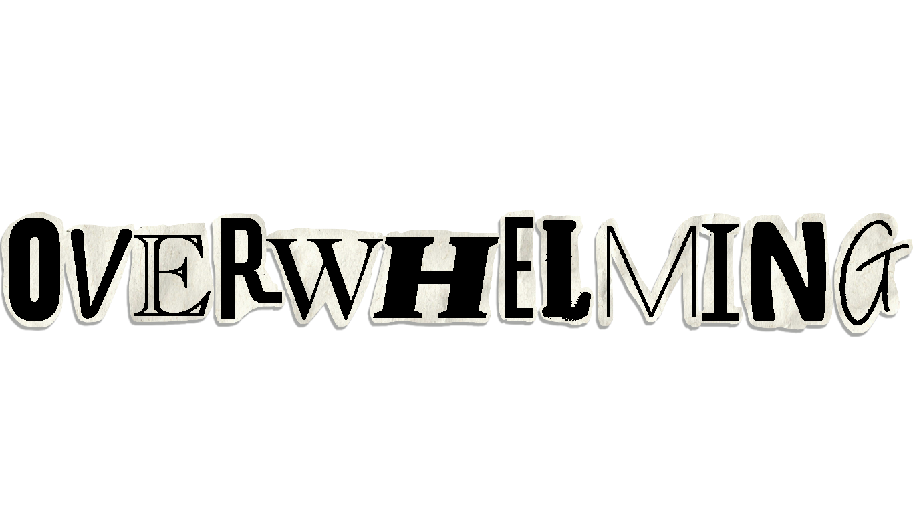
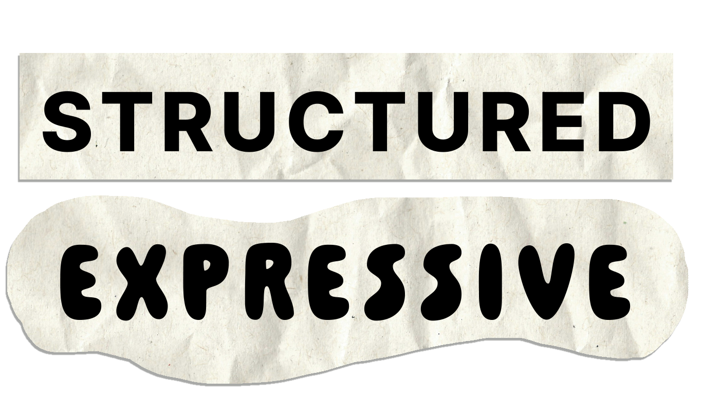
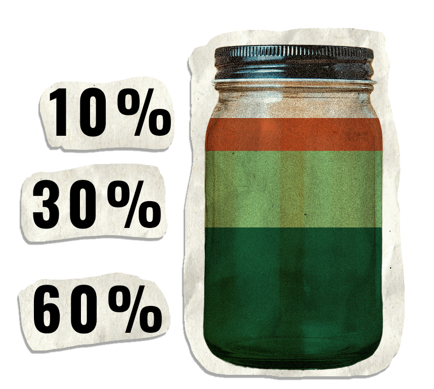
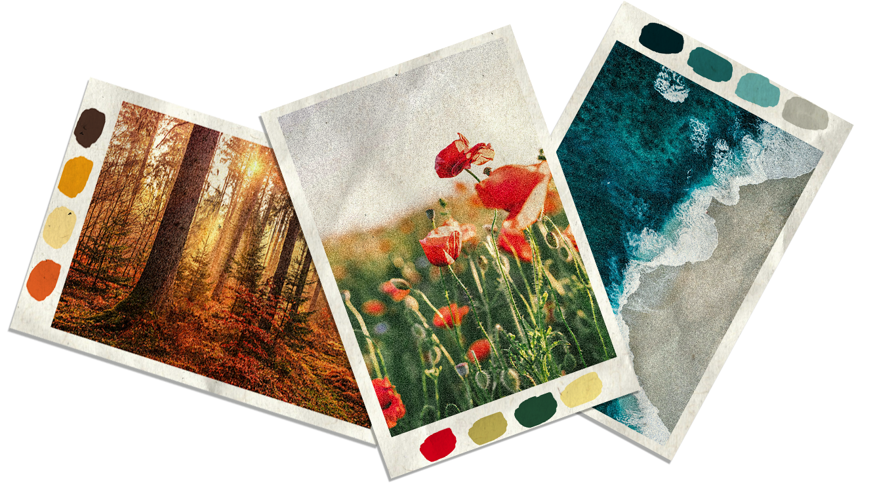
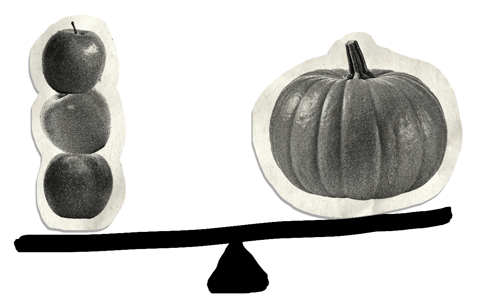
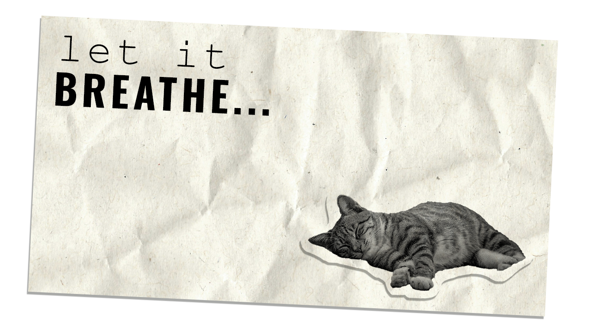

Just like choosing a color palette, it can be easy to get carried away with all the typeface options available. Using too many typefaces can quickly become

and make a design feel less cohesive. A good general rule is to stick to about 2–3 typefaces total, although this can vary depending on what you are designing. For example, a logo might use one main typeface with a secondary font, while a website or app can use a similar approach to create consistency. Limiting your type choices also helps establish hierarchy, improve legibility, and make the overall design easier to navigate.
Typefaces can have either geometric or organic qualities based on the shapes, proportions, and details of their letterforms. Geometric typefaces tend to use clean, simple forms with consistent proportions and shapes . They often create a modern, structured, and polished feeling, making them useful for establishing a clear visual direction. When paired with other simple typefaces or graphic elements, geometric fonts can create a cohesive and contemporary look. Organic typefaces, on the other hand, tend to have more variation and irregularity in their letterforms. They may feature softer curves, uneven proportions, or details that feel influenced by natural forms. These characteristics can make a design feel more expressive, playful, or approachable.


The most effective website and app color scheme will follow a 60-30-10 ratio. This means that the main color is applied to 60% of the website design, the secondary color is applied to a further 30%, and the last 10% is used as the accent color that contrasts with the two main colors.
Distributing complementary colors with these proportions will help to organize and add balance to your design.
When choosing the three different shades, remember the accent color (10%) should be the most vibrant as it will emphasize critical website items like call-to-action elements.
Mother Nature is the best designer you can take inspiration from. To find my palette, I usually browse Unsplash and extract three main colors from a photo that match the 60-30-10 rule. I make sure to take the most vibrant color and use it as the accent color in my design. This will make the call-to-action elements more effective and the overall web page design more digital and contemporary.


Balance within a composition can be achieved in a couple of different ways. Symmetrical balance is the most straightforward. It’s achieved when elements on either side of a central vertical axis are basically the same. For example, two text blocks on either side of the page would create symmetrical balance, even if the content of those blocks wasn’t identical. Asymmetrical balance is achieved when the elements on either side of a central axis aren’t the same. For example, you might have a large image on one side balanced out by prominent text on the other. It is also achieved when the vertical axis that divides two elements isn’t placed directly in the center of the page. In that case, the narrower element should have a “heavier” visual weight than the wider one to achieve balance.
Negative space in a design, also called white space, is space that has no design elements (other than possibly a background color or subtle pattern or texture). As a design principle, negative space is essential because it gives the elements in your composition room to breathe. Without white space, pages look cluttered and are hard to navigate.
